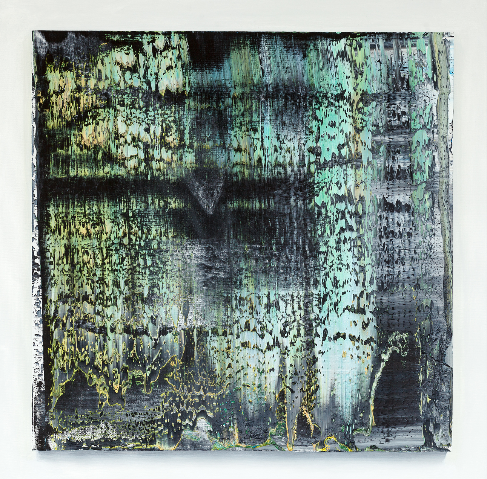
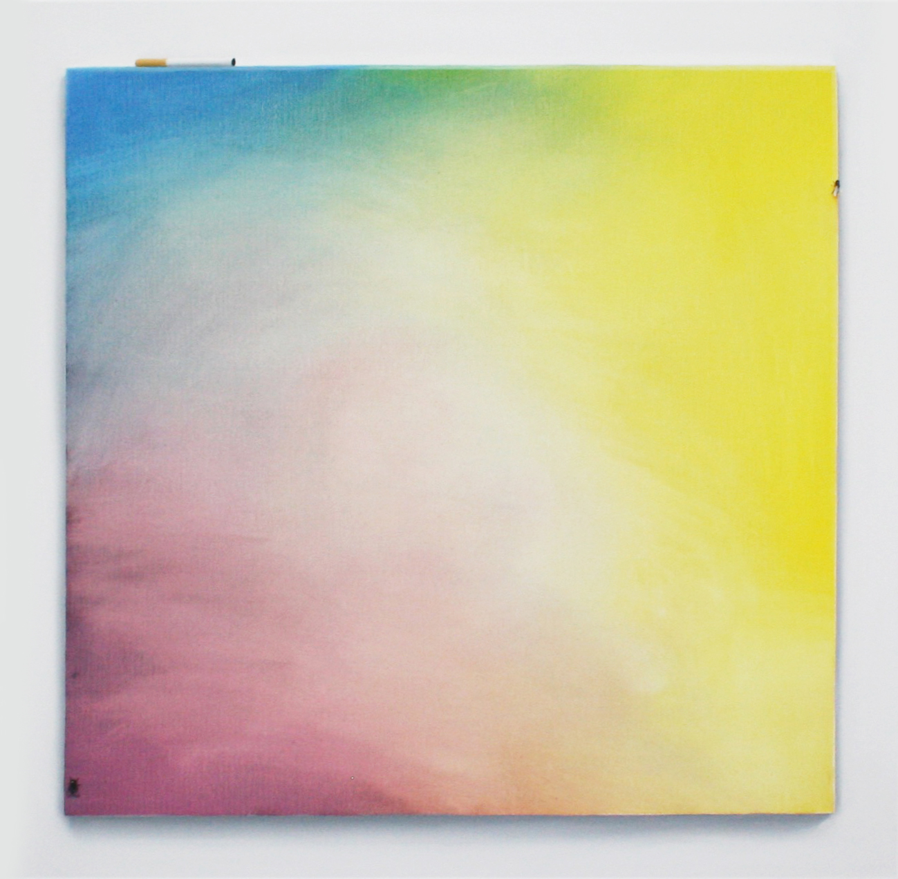
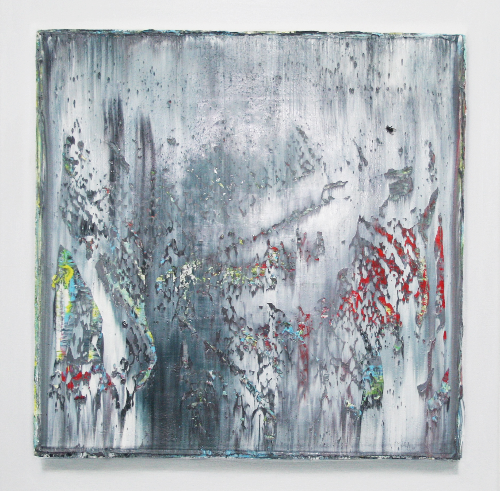
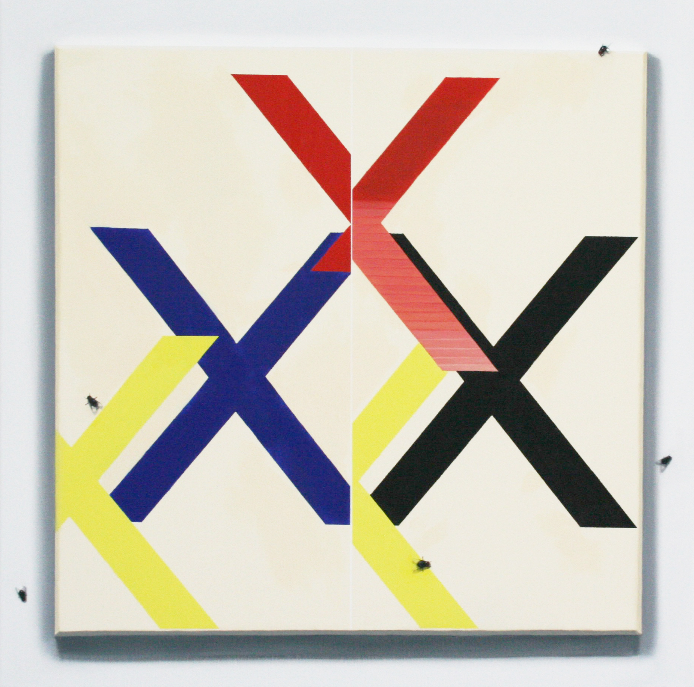
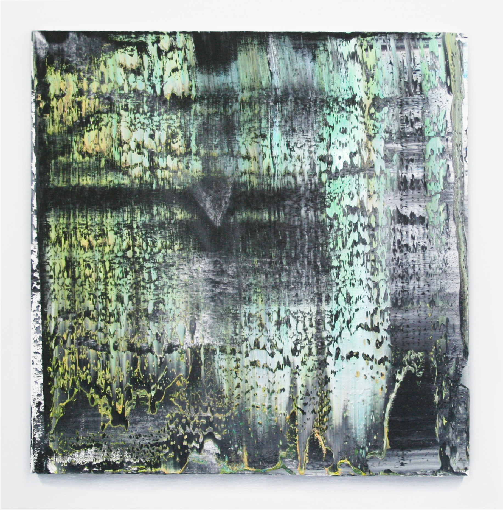
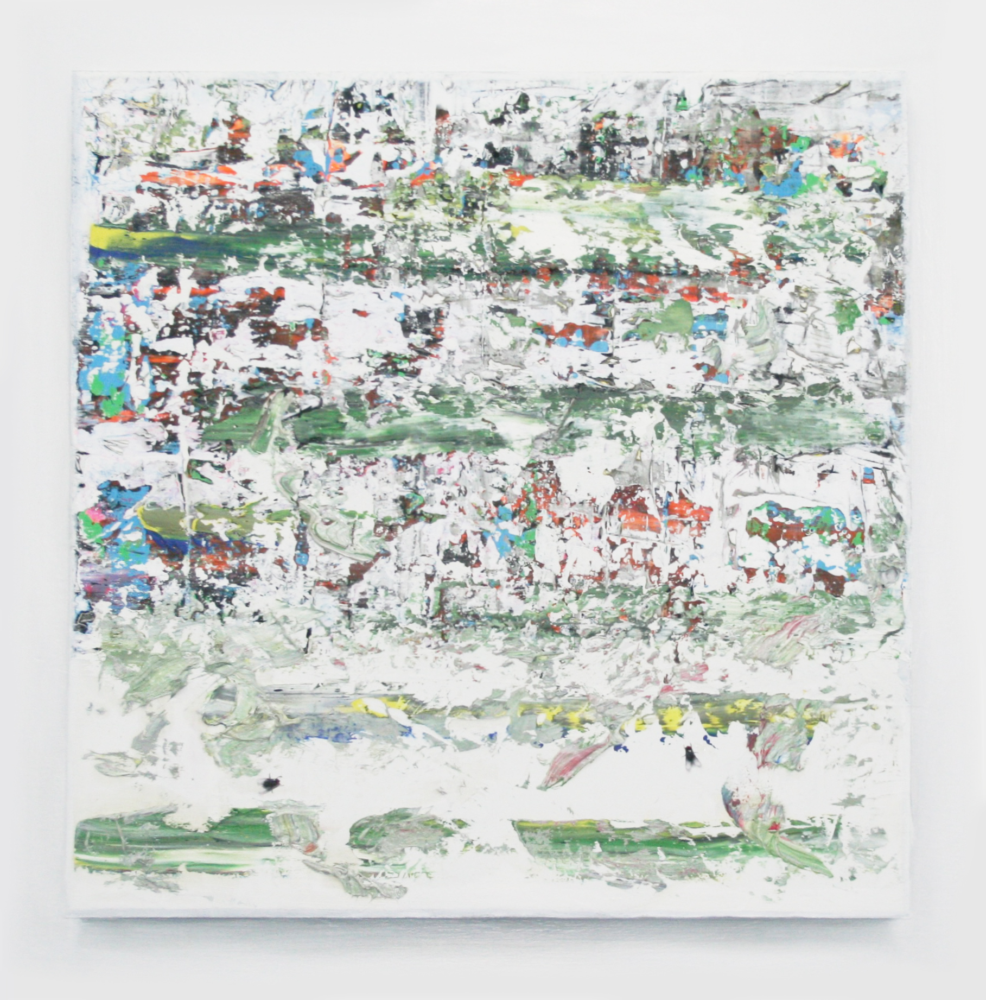
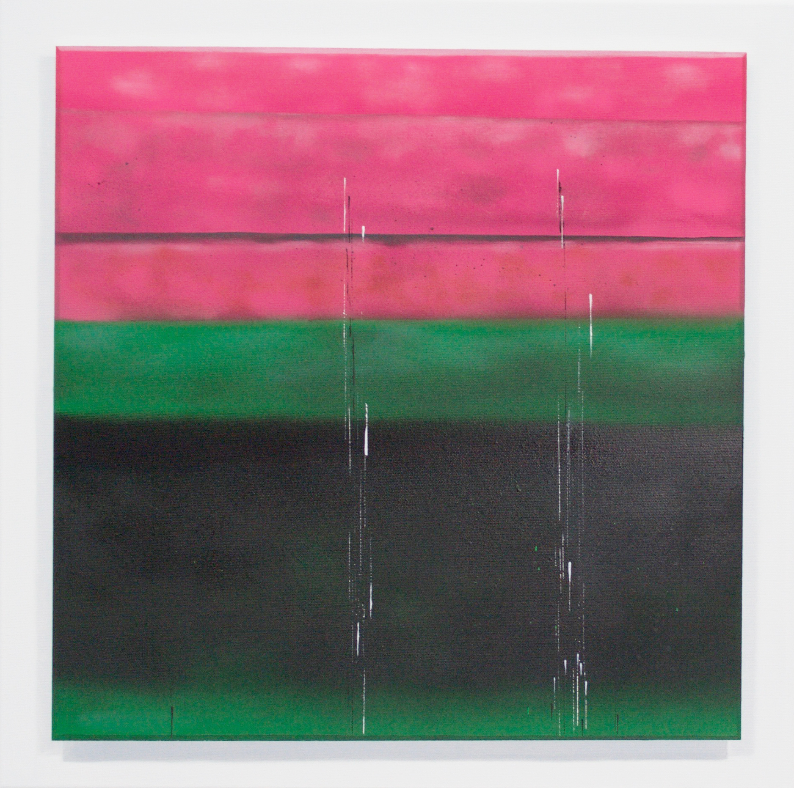
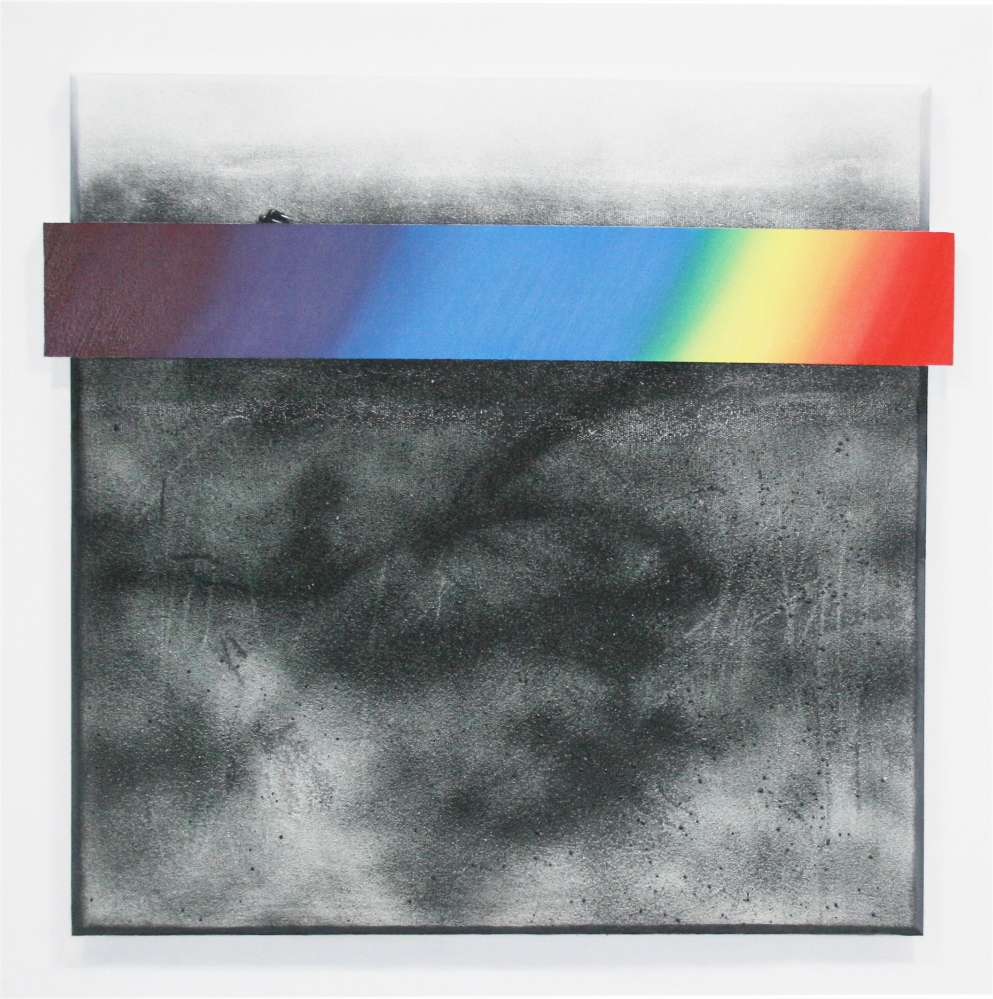

Variations of Fly Infested Funk (Rochelle Feinstein, Mmmmmm...Mehr bitte!), 2017, oil on canvas, 60 x 60 cm

Variations of Fly Infested Funk (Frank Stella as a Fruit Bowl), 2017, oil on canvas, 60 x 60 cm

Variations of Fly Infested Funk (Richter's Relish I), 2017, oil on canvas, 60 x 60 cm

Variations of Fly Infested Funk (For Monika Baer, Smoke If You Got 'Em), 2017, oil on canvas, 60 x 60 cm

Variations of Fly Infested Funk (Richter's Relish II), 2017, oil on canvas, 60 x 60 cm

Variations of Fly Infested Funk (Of Wade Guyton's X's and Other Edible Inks), 2017, oil on canvas, 60 x 60 cm

Variations of Fly Infested Funk (For Wendy White, Taste the Rainbow), 2017, oil on canvas, 60 x 60 cm

Variations of Fly Infested Funk (Monument to Louise Moillon's, 'Still Life with a Basket of Fruit and a Bunch of Asparagus'), 2017, oil, acrylic, and house paint on canvas, 60 x 60 cm

Variations of Fly Infested Funk (After Howard Hodgkin...Now That's a Tall Glass of Water!), 2017, oil on canvas, 60 x 60 cm

Variations of Fly Infested Funk (Sterling Ruby, Messy Wessi), 2017, oil and enamel on canvas, 60 x 60 cm